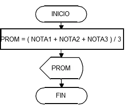
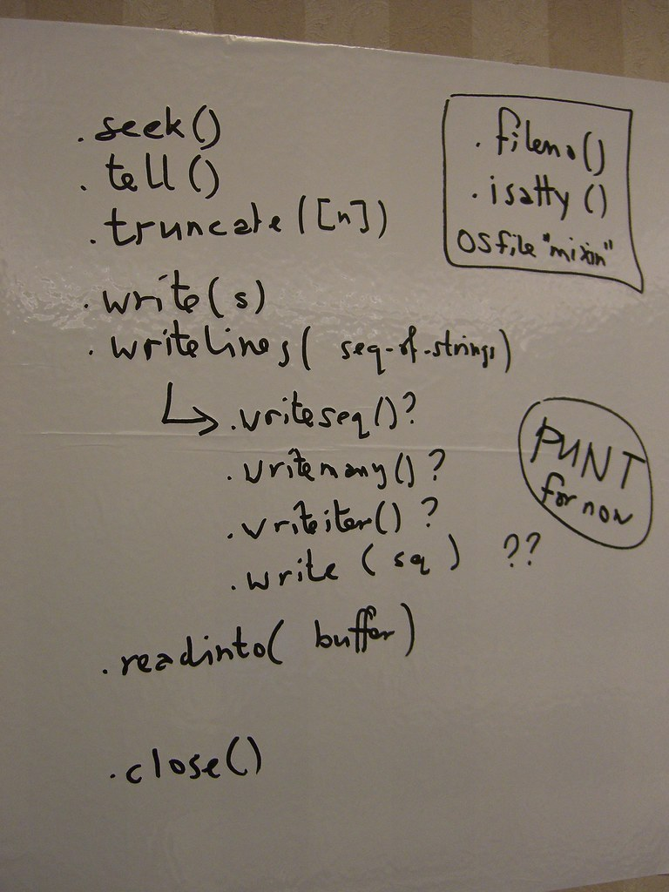
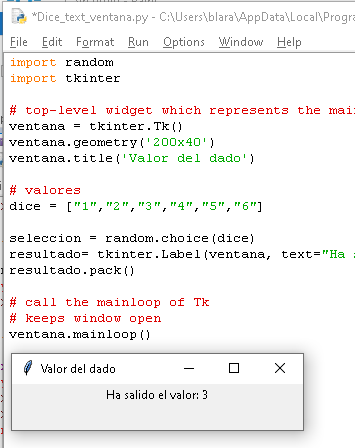
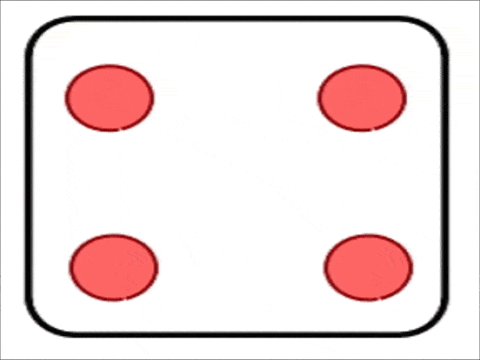

En esta sección vamos a tratar algunos ejemplos para practicar con Python.
En esta sección vamos a tratar algunos ejemplos para practicar con Python.
De este modo descubriremos algunas funciones, palabras reservadas y formas de iniciar los programas, antes de realizar la aplicación final.
¡A practicar!
En esta sección vamos a tratar algunos ejemplos para practicar con Python.
De este modo descubriremos algunas funciones, palabras reservadas y formas de iniciar los programas, antes de realizar la aplicación final.
¡A practicar!
En el programa trabajado en la sección anterior realizaste un pseudocódigo de su proceso.
Recupéralo y vamos a completar su programación usando lo que ya conocemos de Python. Además, le haremos una serie de mejoras. Atrévete con cada paso.
Con lo aprendido en las últimas secciones, realiza el código Python del programa indicado. No te olvides pedir por teclado los 3 valores que necesitas y almacenarlos en sus respectivas variables. Después, pruébalo y comprueba que funciona.
Recuerda que para tomar una variable del teclado necesitamos la función input()
Si además queremos, muy recomendado, que muestre por pantalla un mensaje al usuario que le indique lo que tiene que hacer (y no se quede la pantalla esperando en blanco eternamente), debes poner entre los paréntesis un mensaje delimitado por comillas:
input("Esta frase se muestra por pantalla. Explica en ella qué hay que hacer ahora")
Para asignar lo que se introduce por teclado a la variable x (por ejemplo), se usa x=input("Introduce el valor esperado")

Queremos darle a nuestro programa una mayor flexibilidad: que cada usuario pueda configurar el peso (porcentaje) de la calificación de cada trimestre en la nota final. Para ello, vamos a reflexionar:Necesitarás para ello nuevas variables. También tendrás que inicializarlas: pídele sus valores al usuario, pero recuerda especificar que sólo introduzcan el número, ya que si introducen el símbolo, por ejemplo 15%, el valor se convertirá en una cadena de caracteres al mezclar números y símbolos.
Realiza el código Python de la funcionalidad añadida y depura los errores que resulten en el IDLE para que funcione correctamente.

Cuando se programa, a veces hace falta recurrir a funciones que ya están implementadas. Esto nos facilita poder crear un programa sin tener que repetir el código o implementarlo todo nuevamente.
Para esto se utilizan las librerías o bibliotecas, que son un conjunto de funciones que realizan ciertas operaciones habituales sobre los datos. Por ejemplo: si necesitamos saber la raíz cuadrada de un número utilizaremos la librería llamada math y, dentro de ella, utilizaremos la función sqrt(x), que devuelve la raíz cuadrada de x.
Tienes todas las librerías de Python en este enlace: librerías de Python. Veamos cómo usarlas:
Para añadir la que necesites a tu programa debes usar el comando import. Por ejemplo:
import math
Después ya puedes usar cualquiera de sus funciones poniendo siempre el nombre de la librería delante seguido de un punto y el nombre de la función que quieres utilizar.
Cálculo de la raíz cuadrada de un número:
|
import math x=9 print(math.sqrt(x)) |
Mostrar la fecha actual. Para ello usamos la librería datetime. Esta librería contiene ciertas definiciones, llamadas clases, que hay que importar por separado según la que queramos usar. La función que nos da la fecha actual nos la da la función today() que está en la clase date. Por eso se importa así:
|
from datetime import date print(date.today()) |
Es un conjunto de implementaciones funcionales, codificadas en un lenguaje de programación, que ofrece una interfaz bien definida para la funcionalidad que se invoca.
Vamos a utilizar las librerías que acabamos de conocer y realizaremos un programa de azar: simular las tiradas de un dado.
Los ejercicios te van a proponer mejoras escalonadas. Hazlos a tu ritmo, paso a paso y ¡seguro que te superas cuando consigas realizar el último paso!
Tirar un dado supone el uso de la aleatoriedad. Pero ¿cómo se lleva esta aleatoriedad al cálculo? Python dispone para ello de una librería llamada random.
Python tiene varios tipos de datos para crear secuenciasde valores. Dentro de las secuencias están los tipos de cadenas de caracteres, que ya conoces. Otros tipos muy importante de secuencias son las listas y las tuplas:
| Listas | Se inicializa escribiendo los valores entre corchetes, separando sus elementos con comas cada uno. Los elementos se acceden por el lugar que ocupan empezando a numerar por el 0. | Son heterogéneas y mutables (elementos diferentes y que pueden cambiar). |
Ejemplo: factura=['leche','azúcar',1.2,1.5] |
| Tuplas | Se inicializa escribiendo los valores entre paréntesis, separando sus elementos con comas cada uno. Los elementos se acceden por el lugar que ocupan empezando a numerar por el 0. | Es una lista inmutable. No se pueden modificar sus elementos tras crearla. |
Ejemplo: edades=('Mario',3,'Pepa',5) |
Puedes encontrar más información aquí: tipos secuencia.
Vamos a mejorar nuestra aplicación del dado: le daremos su propia ventana a la aplicación. En dicha ventana vamos a mostrar el número que sale tras ejecutar el programa y hacer la tirada. Vamos a ir realizando cada paso:

¿Te has equivocado en algo al hacer la actividad?
Cuando queremos aprender algo, lo normal es equivocarse al principio. Fallar forma parte de aprender. No te agobies por todos los nuevos conceptos, librerías, nombres de las funciones que ofrece cada librería...son muchos comandos los posibles y la práctica da el conocimiento para su uso.
Además de los enlaces oficiales de Python para trabajar con las librerías y sus funciones, en Internet hay miles de páginas que resuelven dudas sobre las distintas posibilidades. Es cuestión de ir probando y familiarizándose con el nuevo lenguaje. Hay que interpretar los errores como parte del proceso de aprendizaje de la programación.
Para aprender de tus errores sigue estos consejos:
No lo olvides: cuando te equivocas una vez, aprendes para el siguiente intento.
¡Y por supuesto siempre estarán tus profesores para ayudarte! Utiliza tu comunicación con ellos para aprender.

Vamos a dar el último paso de nuestro dado: le vamos a añadir las imágenes para obtener un resultado visual.Las imágenes que vamos a utilizar en el programa las debes descargar de este enlace: imágenes del dado.
No te preocupes si no consigues realizar todos los apartados de este último paso, ¡incidiremos sobre todo lo utilizado aqúí en nuestro próximos programas y proyectos!
¡Vamos al programa!:
Mira este vídeo que te explica cómo instalar la librería PIL en Linux:
Y aquí tienes la explicación de cómo instalar PIL si tu SO es Windows:
Importa los dos módulos que utilizaremos de PIL: Image e ImageTk (utiliza el mismo método de declaración que vimos anteriormente en el ejemplo de uso 2 del apartado sobre las librerías.
Crea la ventana para mostrar la tirada, como hiciste en El ejercicio anterior.
Crea la variable que será el dado. Realizarás la misma operación en en los pasos anteriores, pero en vez de iniciarla con números, debe ser una secuencia de imágenes que crearás pasándole los nombres de los archivos - con su extensión - como cadena de caracteres. De nuevo puedes elegir crearla como lista o como tupla.
Ahora vas a crear la variable que contendrá a la imagen resultante de la tirada. La crearás como una imagen de fotografía usando la función ImageTk.PhotoImage(), perteneciente a ImageTk. Puedes ver en la documentación que esta función debe recibir entre los paréntesis una imagen. Para eso usarás el módulo Image. ¿Qué función, desde de Image, se usa para abrir una imagen?¿Qué debe recibir esa función entre los paréntesis? Piensa cómo seleccionarás al azar lo que se envía a esta función.
Para mostrar en nuestra ventana el resultado, debemos crear de nuevo una etiqueta con Label, igual que hicimos en el ejercicio anterior. La diferencia es que esa etiqueta ahora no recibe un segundo parámetro de tipo text, sino uno de tipo image: nuestra variable anterior con la imagen resultante de la selección al azar.
Ya sólo tienes que mostrar en la ventana la etiqueta, igual que hiciste en el ejercicio 2.2.
Observa y analiza la siguiente instrucción del código. Asegúrate de que comprendes cada parámetro en ella:
ImagenDado = ImageTk.PhotoImage(Image.open(random.choice(dado))
En el paso anterior hemos creado ya nuestro dado digital con visualización incluida. Haz ahora una prueba: en la instrucción en la que muestras la etiqueta en la ventana de la aplicación, añade como parámetro entre los paréntesis expand=True, de manera que quedará:
nombre_variable_etiqueta.pack(expand=True)
Prueba a ejecutar y responde: ¿Qué cambio has observado?¿Para qué crees que sirve este parámetro?
Vamos a ver ahora tres de los errores más comunes en Python, en cada uno de los ejercicios a continuación. Los nombres de estos errores son ZeroDivisionError, NameError, TypeError.
Prueba lo siguiente: en tu IDLE ejecuta las instrucciones print(3/0), print(s), print (3+"Hola") :
Fíjate en que Python te indica el tipo de error. En una buena programación, la posibilidad de error del programador o del usuario (introduciendo valores que no se corresponden con lo esperado) debe tenerse en cuenta. Para ello utilizamos el bloque try/except y se usa así:
|
print ("Introduce los valores a dividir.") a= input("Ingresa el primer numero: \n") b= input("Ingresa el segundo numero: \n") try: print ("El resultado es: ",a/b) #Debe haber una indentación en el uso de try y de except except: print("Error al introducir los datos")# Indentamos también |
Ejecútalo e intenta ahora:
Verás que aparece el mensaje que has configurado para que aparezca. Aunque esto no nos ayuda mucho a la hora de identificar cuál ha sido exactamente el error si no sabemos qué datos introdujo el usuario...
Vamos a perfeccionar este código con los ejemplos a continuación.
Para introducir en el código un comentario de programador, que explique por ejemplo qué es lo que se va a calcular a contuación, podemos preceder la línea del símbolo #
Esto hará que la ejecución del programa ignore completamente el texto a continuación de ese símbolo. Si queires ignorar un texto de varias líneas, deberás usar una triple comilla doble (""") al comienzo y al final del texto que deseas que sea ignorado en la ejecución.
Esto se llama comentarios en el código. ¡Úsalo en tus programas y te resultará de mucha ayuda para saber por qué pusiste cada grupo de instrucciones!
except ZeroDivisionError:
print ("Error al intentar dividir por cero, intenta otro calculo!")
Vamos a tratar ahora la segunda excepción habitual: NameError. Ejecuta el siguiente programa:
|
print ("Introduce los valores a dividir.") a= input("Ingresa el primer numero: \n") b= input("Ingresa el segundo numero: \n") try: print ("El resultado es: ",a/c) #Debe haber una indentación en el uso de try y de except except ZeroDivisionError: print ("Error al intentar dividir por cero") |
Finalmente, vamos a tratar el tipo de error: TypeError. Toma como entrada el programa que creaste en el apartado anterior:
|
print ("Introduce los valores a dividir.") a= input("Ingresa el primer numero: \n") b= input("Ingresa el segundo numero: \n") try: print ("El resultado es: ",a/b) #Debe haber una indentación en el uso de try y de except print ("El resultado es la división de los números: ", a, " y ", c) except ZeroDivisionError: print ("Error al intentar dividir por cero") except NameError: print ("Se intenta usar una variable que no existe") |
Crea en tu cuaderno de evidencias una entrada en la que expongas el resultado de lo que has aprendido sobre Python en estos últimos trabajos de programación:
Obra publicada con Licencia Creative Commons Reconocimiento Compartir igual 4.0